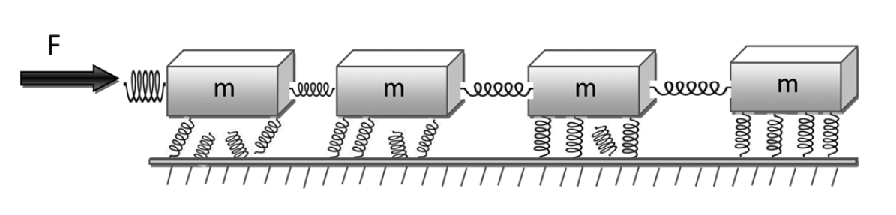
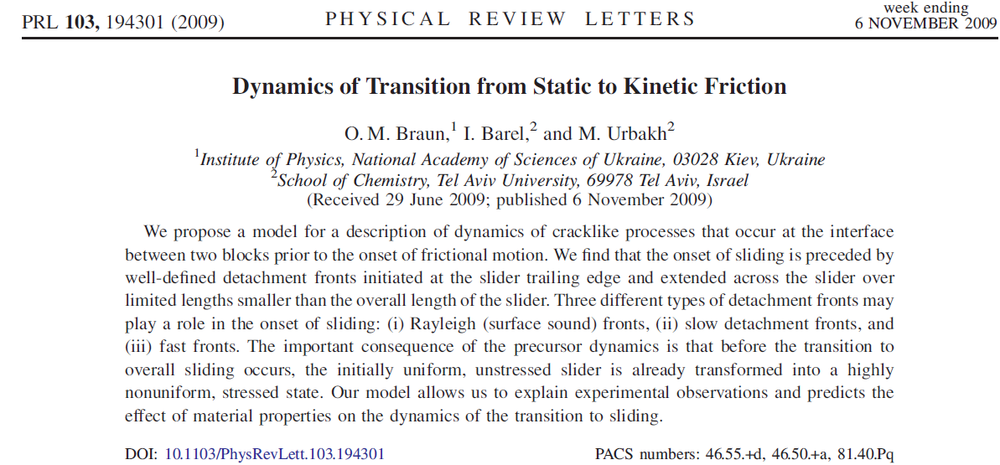

And perhaps even find errors?

Computing competence represents a central element in scientific problem solving, from basic education and research to essentially almost all advanced problems in modern societies.
Computing competence enlarges the body of tools available to students and scientists beyond classical tools and allows for a more generic handling of problems. Focusing on algorithmic aspects results in deeper insights about scientific problems.
Computing means solving scientific problems using all possible tools, including symbolic computing, computers and numerical algorithms, and analytical paper and pencil solutions .
Computing is about developing an understanding of the scientific method by enhancing algorithmic thinking when solving problems.
On the part of students, this competence involves being able to:
All these elements are central for maturing and gaining a better understanding of the modern scientific process per se.
The power of the scientific method lies in identifying a given problem as a special case of an abstract class of problems, identifying general solution methods for this class of problems, and applying a general method to the specific problem (applying means, in the case of computing, calculations by pen and paper, symbolic computing, or numerical computing by ready-made and/or self-written software). This generic view on problems and methods is particularly important for understanding how to apply available, generic software to solve a particular problem.
So, why should basic university education undergo a shift towards modern computing?
The impact of the computer on mathematics and science is tremendous: science and industry now rely on solving mathematical problems through computing.
Classical pendulum with damping and external force as it could appear in a mechanics course (PHY 321) $$ ml\frac{d^2\theta}{dt^2}+\nu\frac{d\theta}{dt} +mgsin(\theta)=Acos(\omega t). $$ Easy to solve numerically and then visualize the solution. Almost the same equation for an RLC circuit in the electromagnetism course (PHY 482) $$ L\frac{d^2Q}{dt^2}+\frac{Q}{C}+R\frac{dQ}{dt}=Acos(\omega t). $$
Classical pendulum equations with damping and external force $$ \frac{d\theta}{d\hat{t}} =\hat{v}, $$ and $$ \frac{d\hat{v}}{d\hat{t}} =Acos(\hat{\omega} \hat{t})-\hat{v}\xi-\sin(\theta), $$ with \( \omega_0=\sqrt{g/l} \), \( \hat{t}=\omega_0 t \) and \( \xi = mg/\omega_0\nu \).
The RLC circuit $$ \frac{dQ}{d\hat{t}} =\hat{I}, $$ and $$ \frac{d\hat{I}}{d\hat{t}} =Acos(\hat{\omega} \hat{t})-\hat{I}\xi-Q, $$ with \( \omega_0=1/\sqrt{LC} \), \( \hat{t}=\omega_0 t \) and \( \xi = CR\omega_0 \).
The equations are essentially the same. Great potential for abstraction.
These physics examples can all be studied using almost the same types of algorithms, simple eigenvalue solvers and Gaussian elimination with the same starting matrix!
This is a two-point boundary value problem $$ R \frac{d^2 u(x)}{dx^2} = -F u(x), $$ where \( u(x) \) is the vertical displacement, \( R \) is a material specific constant, \( F \) the force and \( x \in [0,L] \) with \( u(0)=u(L)=0 \).
Scale equations with \( x = \rho L \) and \( \rho \in [0,1] \) and get $$ \frac{d^2 v(\rho)}{dx^2} +K v(\rho)=0, $$ a standard eigenvalue problem with \( K= FL^2/R \).
If you replace \( R=-\hbar^2/2m \) and \( -F=\lambda \), we have the quantum mechanical variant for a particle moving in a well with infinite walls at the endpoints.
Discretize the second derivative and the rhs $$ -\frac{v_{i+1} -2v_i +v_{i-i}}{h^2}=\lambda v_i, $$ with \( i=1,2,\dots, n \). We need to add to this system the two boundary conditions \( v(0) =v_0 \) and \( v(1) = v_{n+1} \). The so-called Toeplitz matrix (special case from the discretized second derivative) $$ \mathbf{A} = \frac{1}{h^2}\left(\begin{array}{cccccc} 2 & -1 & & & & \\ -1 & 2 & -1 & & & \\ & -1 & 2 & -1 & & \\ & \dots & \dots &\dots &\dots & \dots \\ & & &-1 &2& -1 \\ & & & &-1 & 2 \\ \end{array} \right) $$ with the corresponding vectors \( \mathbf{v} = (v_1, v_2, \dots,v_n)^T \) allows us to rewrite the differential equation including the boundary conditions as a standard eigenvalue problem $$ \mathbf{A}\mathbf{u} = \lambda\mathbf{v}. $$ The Toeplitz matrix has analytical eigenpairs!! Adding a potential along the diagonals allows us to reuse this problem for many types of physics cases.
We are first interested in the solution of the radial part of Schroedinger's equation for one electron. This equation reads $$ -\frac{\hbar^2}{2 m} \left ( \frac{1}{r^2} \frac{d}{dr} r^2 \frac{d}{dr} - \frac{l (l + 1)}{r^2} \right )R(r) + V(r) R(r) = E R(r). $$ Suppose in our case \( V(r) \) is the harmonic oscillator potential \( (1/2)kr^2 \) with \( k=m\omega^2 \) and \( E \) is the energy of the harmonic oscillator in three dimensions. The oscillator frequency is \( \omega \) and the energies are $$ E_{nl}= \hbar \omega \left(2n+l+\frac{3}{2}\right), $$ with \( n=0,1,2,\dots \) and \( l=0,1,2,\dots \).
Since we have made a transformation to spherical coordinates it means that \( r\in [0,\infty) \). The quantum number \( l \) is the orbital momentum of the electron. Then we substitute \( R(r) = (1/r) u(r) \) and obtain $$ -\frac{\hbar^2}{2 m} \frac{d^2}{dr^2} u(r) + \left ( V(r) + \frac{l (l + 1)}{r^2}\frac{\hbar^2}{2 m} \right ) u(r) = E u(r) . $$ The boundary conditions are \( u(0)=0 \) and \( u(\infty)=0 \).
We introduce a dimensionless variable \( \rho = (1/\alpha) r \) where \( \alpha \) is a constant with dimension length and get $$ -\frac{\hbar^2}{2 m \alpha^2} \frac{d^2}{d\rho^2} u(\rho) + \left ( V(\rho) + \frac{l (l + 1)}{\rho^2} \frac{\hbar^2}{2 m\alpha^2} \right ) u(\rho) = E u(\rho) . $$ In project 2 we choose \( l=0 \). Inserting \( V(\rho) = (1/2) k \alpha^2\rho^2 \) we end up with $$ -\frac{\hbar^2}{2 m \alpha^2} \frac{d^2}{d\rho^2} u(\rho) + \frac{k}{2} \alpha^2\rho^2u(\rho) = E u(\rho) . $$ We multiply thereafter with \( 2m\alpha^2/\hbar^2 \) on both sides and obtain $$ -\frac{d^2}{d\rho^2} u(\rho) + \frac{mk}{\hbar^2} \alpha^4\rho^2u(\rho) = \frac{2m\alpha^2}{\hbar^2}E u(\rho) . $$
We have thus $$ -\frac{d^2}{d\rho^2} u(\rho) + \frac{mk}{\hbar^2} \alpha^4\rho^2u(\rho) = \frac{2m\alpha^2}{\hbar^2}E u(\rho) . $$ The constant \( \alpha \) can now be fixed so that $$ \frac{mk}{\hbar^2} \alpha^4 = 1, $$ and it defines a natural length scale (like the Bohr radius does) $$ \alpha = \left(\frac{\hbar^2}{mk}\right)^{1/4}. $$ Defining $$ \lambda = \frac{2m\alpha^2}{\hbar^2}E, $$ we can rewrite Schroedinger's equation as $$ -\frac{d^2}{d\rho^2} u(\rho) + \rho^2u(\rho) = \lambda u(\rho) . $$ This is similar to the equation for a buckling beam. In three dimensions the eigenvalues for \( l=0 \) are \( \lambda_0=1.5,\lambda_1=3.5,\lambda_2=5.5,\dots . \)
Define first the diagonal matrix element $$ d_i=\frac{2}{h^2}+V_i, $$ and the non-diagonal matrix element $$ e_i=-\frac{1}{h^2}. $$ In this case the non-diagonal matrix elements are given by a mere constant. All non-diagonal matrix elements are equal.
With these definitions the Schroedinger equation takes the following form $$ d_iu_i+e_{i-1}u_{i-1}+e_{i+1}u_{i+1} = \lambda u_i, $$ where \( u_i \) is unknown. We can write the latter equation as a matrix eigenvalue problem $$ \begin{equation} \left( \begin{array}{ccccccc} d_1 & e_1 & 0 & 0 & \dots &0 & 0 \\ e_1 & d_2 & e_2 & 0 & \dots &0 &0 \\ 0 & e_2 & d_3 & e_3 &0 &\dots & 0\\ \dots & \dots & \dots & \dots &\dots &\dots & \dots\\ 0 & \dots & \dots & \dots &\dots &d_{n_{\mathrm{step}}-2} & e_{n_{\mathrm{step}}-1}\\ 0 & \dots & \dots & \dots &\dots &e_{n_{\mathrm{step}}-1} & d_{n_{\mathrm{step}}-1} \end{array} \right) \left( \begin{array}{c} u_{1} \\ u_{2} \\ \dots\\ \dots\\ \dots\\ u_{n_{\mathrm{step}}-1} \end{array} \right)=\lambda \left( \begin{array}{c} u_{1} \\ u_{2} \\ \dots\\ \dots\\ \dots\\ u_{n_{\mathrm{step}}-1} \end{array} \right) \label{eq:sematrix} \end{equation} $$ or if we wish to be more detailed, we can write the tridiagonal matrix as $$ \begin{equation} \left( \begin{array}{ccccccc} \frac{2}{h^2}+V_1 & -\frac{1}{h^2} & 0 & 0 & \dots &0 & 0 \\ -\frac{1}{h^2} & \frac{2}{h^2}+V_2 & -\frac{1}{h^2} & 0 & \dots &0 &0 \\ 0 & -\frac{1}{h^2} & \frac{2}{h^2}+V_3 & -\frac{1}{h^2} &0 &\dots & 0\\ \dots & \dots & \dots & \dots &\dots &\dots & \dots\\ 0 & \dots & \dots & \dots &\dots &\frac{2}{h^2}+V_{n_{\mathrm{step}}-2} & -\frac{1}{h^2}\\ 0 & \dots & \dots & \dots &\dots &-\frac{1}{h^2} & \frac{2}{h^2}+V_{n_{\mathrm{step}}-1} \end{array} \right) \label{eq:matrixse} \end{equation} $$ Recall that the solutions are known via the boundary conditions at \( i=n_{\mathrm{step}} \) and at the other end point, that is for \( \rho_0 \). The solution is zero in both cases.
The last example shows the potential of combining numerical algorithms with analytical results (or eventually symbolic calculations), allowing thereby students and teachers to
By early in the Fall 2017 term (in time to make any necessary curricular changes for the 2018-19 academic year), the committee (Danny Caballero, Sean Couch, Wade Fisher, Connor Glosser, Morten Hjorth-Jensen, Claire Kopenhafer, Brian O'Shea, and Carlo Piermarocchi) will present a document to the faculty of the Department of Physics and Astronomy that:
Prior to Fall 2017, the committee will pursue several goals. We will: